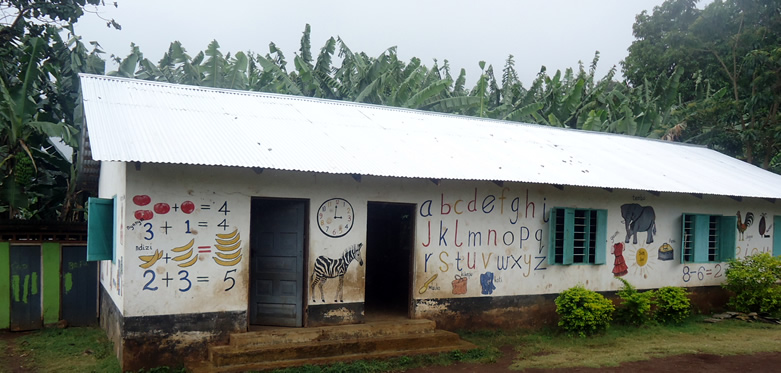
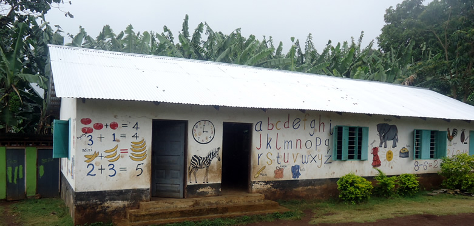

DULUTI BLESSED ORPHANAGE

Duluti Blessed Oprhanange is a day school for kids in the age between three and seven years old. It is located in an area called Madukania just outside Arusha, Tanzania. Today 66 kids attend to the school daily, and many of the kids come from very poor families, some even have HIV.
The school was founded by Collins Daniel Makau in 2012. He started by renting a schoolhouse in Madukani, and in the beginning he had 10 kids in the age of three to five years old. Collins saw the need for change with the accumulation of children who didn't attend the public school and would spend their days unattended and bored. The idea was to create a school where these children could gain a chance for a better future. This idea was met with support from his friends, family, and community. The result of this is a lovely school where children can begin their learning experience.
Duluti Blessed Oprhanange has expanded quickly in size since its opening. In 2013 he had 20 kids, in 2014 he had 37 kids, in 2015 there were 55 kids, and this year he has as much as 66 kids. 29 of the kids are girls and 37 are boys. Out of the 66 kids 30 are orphans. The increase in number of kids and kids without parents have lead to the need of a new and larger school house. As a result of this Collins was looking to buy some good ground for a good price where a new school can be built.
The new school will give the kids much more space and a better learning environment. It will also give kids the opportunity of sleeping over at the school as some of the kids have it much better there then at home. To run the school today and to build the new school Collins is dependent on getting in donations. He is already using his savings and selling milk from his cow to pay for everything but this is not enough. Every donation you give will help these kids get a better life!
Here is a list of what Collins need help paying for, and where you can make an important contribution:
- Salary to the teachers
- Food
- Uniforms
- Transport
- Stationsary's
- Buliding materials to build a new school
- New water pump machine
- Sponsor one child for $800 a year
Feel free to donate to bank number: 9120000855934
 
